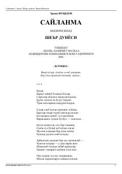

S2Erkin Vohidovning sara she'rlari jamlangan "Saylanma" to'plamining ikkinchi jildi.
Ushbu kitob taniqli o'zbek shoiri Erkin Vohidovning "Saylanma" asarlar to'plamining ikkinchi jildi bo'lib, muallifning turli yillarda bitilgan sara she'rlarini o'z ichiga oladi. To'plamga shoirning falsafiy, lirik va ijtimoiy ruhdagi asarlari jamlangan. Kitob she'riyat ixlosmandlari va keng kitobxonlar ommasiga mo'ljallangan.